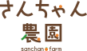

WORKS
さんちゃん農園
野菜収穫体験リーフレット（観音折り8P）
Graphic Design

- 企画
- デザイン
- ロゴデザイン
アースカラーをベースに、親しみやすさと安心感を意識した
デザインのリーフレットです。
表紙には割引クーポンを付けて「持ち帰りたくなる仕掛け」を取り入れました。
QRコードを設置し、予約までの導線を明確化。
見やすさと便利さを両立したレイアウト設計を心がけています。
農園のあたたかさと自然の恵みを表現しました。
野菜を連想させるアースカラーを基調に、やさしさと安心感を伝えています。
丸みのある文字で、子どもから大人まで親しみやすい雰囲気にしました。